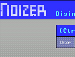

|  |
Sponsored by Motorola, Silicon Valley Graphics and the Romanian Ministry of Trade. . 'Anonymous Muttering' attempts to approach an open notion of 'events' through experimental dispositions, simultaneously located in urban spaces and in technical networks of data processing systems. What happens cannot be traced back to references in real space. a) Smoothened Heterogeneity The contemporary discourse about architecture increasingly accepts the contradictory and the multiple layeredness of fragmentation and collision. |